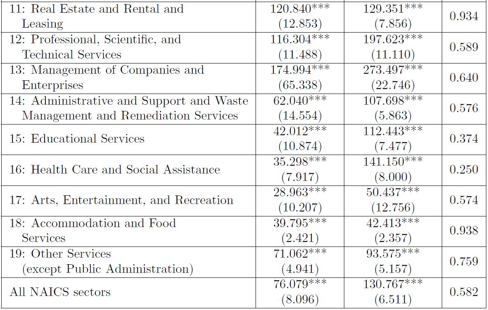

Differential response of young and mature firms to credit supply shocks

Summary
This study reveals that a one standard deviation increase in credit supply enhances employment growth in young and small firms by 0.61%, boosts their net job creation rates by 0.78%, and reduces their exit rates by 0.14%. However, the effects on young and large or mature and small firms are minimal.
Interestingly, areas with a higher proportion of workers in the construction industry experience a more positive impact from credit supply shocks on young enterprises in terms of employment and net job creation. This occurs because, within the construction sector, an increase in labor demand raises workers' wages more significantly in startup companies than in mature companies.
Keywords
Startup firm activities, Credit supply shocks
JEL
J23, L25, M13